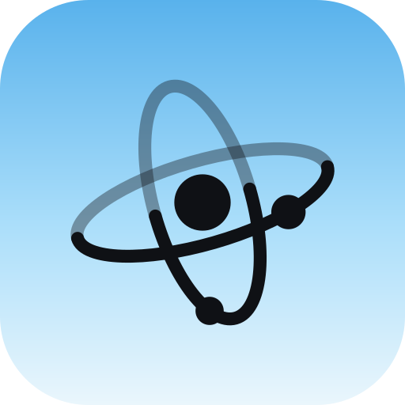

Launching first

Sedi
Anyone can use itOne calm workspace for tasks, goals, calendar and notes, connected by a single card system you drag between tools. Your data stays on your device, it works offline, and in-app help walks you to the right button.